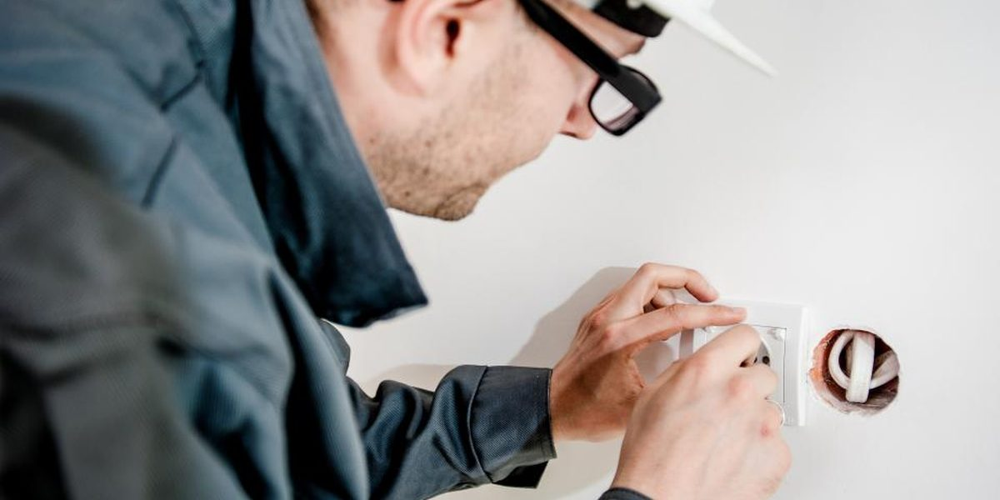

«Ya que estás aquí, mira esto también»: 31 trabajos extra entraron gratis en una obra de 185.000 TL

Rıfat Dönmezer Elektrik Autónomos · Bursa · 2 empleados · Unos 30 trabajos al mesLa instalación de una pastelería duró 19 días en lugar de 12. Los trabajos extra que el cliente pedía cada día sumaron 101.400 TL, pero no se escribió ninguno; el cliente quiere pagar el precio acordado.
Listó uno por uno los 31 trabajos extra y los leyó con el cliente; cobró todos los materiales y la mitad de la mano de obra, 69.900 TL en total. Ahora no empieza ningún trabajo extra sin la aprobación por mensaje.
¿Qué pasó?
A finales de julio, Rıfat Dönmezer acordó 185.000 TL, materiales incluidos, por la instalación eléctrica de una pastelería en reformas. El trabajo debía durar 12 días laborables. El dueño de la pastelería pasaba cada mañana por el local y cada vez añadía algo: dos enchufes más detrás del mostrador, una iluminación aparte para la vitrina, la línea del rótulo, una línea para un armario en el almacén. Rıfat Dönmezer dijo «vale» a todo y no habló del precio de ninguna.
El trabajo terminó en 19 días. Junto con su ayudante Emirhan Koçak lo contaron a partir de las fotos de sus teléfonos y de los tickets de materiales: 31 trabajos extra. Materiales extra, 38.400 TL; mano de obra de los siete días trabajados de más, 63.000 TL; en total, 101.400 TL. Entretanto, los dos trabajos siguientes se retrasaron una semana; uno de los clientes no esperó y dio a otro un trabajo de 42.000 TL.
El día del último pago, el dueño de la pastelería sacó los 55.000 TL restantes y dijo: «Habíamos acordado 185, la cuenta está saldada». Cuando Rıfat Dönmezer sacó los trabajos extra, esta fue la respuesta: «Si me hubieras dicho que costaría dinero, no habría pedido la mitad». No tiene ni un papel firmado. El dueño de la pastelería es una persona conocida en el barrio y le ha enviado tres clientes más.
En cifras
¿Qué hizo Rıfat Dönmezer Elektrik?
Rıfat Dönmezer y Emirhan Koçak hicieron la lista de los 31 trabajos extra con sus fechas y añadieron los tickets de materiales. Rıfat Dönmezer llevó la lista a la pastelería el 24 de agosto y la leyó línea por línea con el dueño. El dueño de la pastelería dijo que 9 de los 31 trabajos los había propuesto el propio Rıfat Dönmezer; este lo reconoció. Al final acordaron el total de los materiales, 38.400 TL, y la mitad de la mano de obra, 31.500 TL: en total, 69.900 TL en dos plazos. El primer plazo se pagó. La otra mitad de la mano de obra, 31.500 TL, quedó a cargo de Rıfat Dönmezer.
En el formulario de presupuesto se añadieron la lista de partidas del trabajo y la frase «todo trabajo que no esté en la lista se presupuesta aparte». Cuando se pide un trabajo extra, Emirhan Koçak envía al cliente por mensaje el nombre del trabajo y su importe; no se empieza sin recibir el «sí». En los tres trabajos siguientes se pidieron 14 trabajos extra. Al ver el precio, los clientes renunciaron a tres; por los 11 trabajos extra restantes se cobraron aparte 46.200 TL. El dueño de la pastelería envió la semana pasada a otro conocido.
Qué hacer en una situación parecida, paso a paso
1Primeras 24 horas
- Haz hoy la lista de los trabajos extra, mientras tienes fresca la memoria y tienes en la mano las fotos y los tickets. En cada línea escribe qué se hizo, qué día y los materiales.
- Lleva al cliente la lista, no la cifra total. «Quiero 101.400 TL más» es una frase de regateo; una lista de 31 líneas es el detalle de un trabajo hecho.
2Esta semana
- Habla por separado de los materiales y de la mano de obra. Los materiales tienen ticket y no se discuten. En la mano de obra, haber trabajado sin decir el precio es también culpa tuya; ahí asume tu parte.
- Lee la lista con el cliente y separa qué trabajos pidió él y cuáles propusiste tú. Es difícil facturar al cliente un trabajo que propusiste tú mismo.
- Ofrece tú dividir el importe acordado en plazos. El cliente que tiene que pagar de golpe una deuda que no esperaba se ofende.
- Termina esta conversación como una cuenta cerrada. Si vas a conservar al cliente, que no quede nada por cobrar.
3Solución duradera
- En el presupuesto escribe las partidas del trabajo una por una y añade debajo esta frase: todo trabajo que no esté en la lista se presupuesta aparte.
- Cuando pidan un trabajo extra, deja la herramienta y coge el teléfono: que el nombre del trabajo y su importe salgan por mensaje y no empieces sin que llegue el «sí».
- En los trabajos largos, al final de cada semana envía al cliente los trabajos extra de esa semana y su total. Cuanto más pequeña es la sorpresa, más fácil es pagarla.
La lecciónEl trabajo extra hecho sin decir el precio se queda, a ojos del cliente, como un favor.
3 comentarios
-
HKHülya KarakoçDueña de una pastelería
El año pasado viví una reforma parecida, esta vez desde el otro lado. Cuando el electricista decía «claro, señora», yo lo daba por incluido en el acuerdo. El trabajo que se hace sin decir el precio lo doy por gratis; no es mala fe, es que no hay otra forma de saberlo. Si el electricista me hubiera dicho por el primer enchufe «esto cuesta 1.500 TL», la mitad de las treinta y una peticiones no las habría hecho nunca.
Rıfat Dönmezer Rıfat Dönmezer Elektrik · Electricista, propietario La empresa respondióEn los tres trabajos siguientes ocurrió exactamente eso: al oír el precio, los clientes renunciaron por su cuenta a tres de las 14 peticiones y nadie se ofendió. Decirlo el primer día era mi obligación; cada «vale» que callé acabó convirtiéndose luego en una negociación.
Traducido del turco · -
JHJürgen HasselbachElectricista, Kassel
Aquí al final de cada jornada se escribe un breve parte de trabajo: cuántas horas se trabajaron, qué material se usó y qué se hizo fuera del contrato. El cliente firma ese papel por la tarde. Lleva diez minutos y, al terminar el trabajo, no queda nada que discutir. La aprobación por mensaje está bien, pero la firma al final del día es más sólida.
Rıfat Dönmezer Rıfat Dönmezer Elektrik · Electricista, propietario Se aplicaráEn los trabajos cortos basta con el mensaje, pero en los que pasan de una semana lo que usted dice es más acertado. Emirhan ha preparado un formulario de fin de jornada de una página; lo estamos usando por primera vez en una obra de un local que está en marcha ahora.
Traducido del alemán · -
TETansu ErbilInteriorista
En obra a esto se le llama formulario de modificaciones, y no se lleva solo por el dinero. Su verdadera utilidad está en el plazo: cada trabajo extra mueve también la fecha de entrega. Poned en la lista, junto al importe, «este trabajo alarga la entrega medio día». El trabajo de 42.000 TL que perdisteis es consecuencia de no haber hablado no del dinero, sino del plazo.
Traducido del turco ·
#ampliación del alcance#trabajo extra#cobros#aprobación por escrito